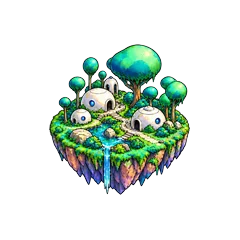
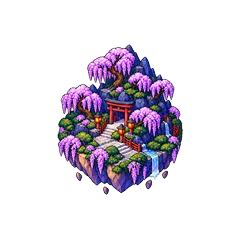
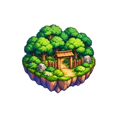
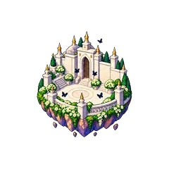
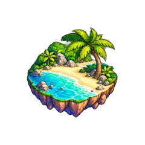
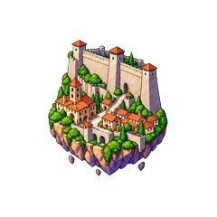

Worlds
Anime Godkillers has 6 worlds. Each one has 7 enemies, its own pet egg, two token gachas and one upgrade. Worlds 2, 4 and 6 also have a sword boss.
What you earn in a world stays yours after you move on, but older pets hit weaker.
World List

Kame FoothillsWorld 1
Wisteria RidgeWorld 2
Leaf OutskirtsWorld 3
Reaper CourtWorld 4
Grand ShoreWorld 5
Wall FrontierWorld 6| World | Name | Egg price | Mission reward | Raid entrances |
|---|---|---|---|---|
| World 1 | Kame Foothills | 25 coins | +3% energy, +1% damage | — |
| World 2 | Wisteria Ridge | 250 coins | +5% energy, +2% damage | Time Attack, Boss Rush |
| World 3 | Leaf Outskirts | 2,500 coins | +7% energy, +3% damage | — |
| World 4 | Reaper Court | 25,000 coins | +9% energy, +4% damage | Endless |
| World 5 | Grand Shore | 312,500 coins | +10% energy, +5% damage | — |
| World 6 | Wall Frontier | 3,906,250 coins | +15% energy, +10% damage | Defense |
Unlocking the Next World
To open the next world, finish all 6 gate missions of your current world. Each mission is simple: beat one enemy a set number of times. The numbers are the same in every world, 83 kills in total.
| Tier | Target | Kills needed |
|---|---|---|
| Recruit | Recruit enemy | 25 |
| Fighter | Fighter enemy | 20 |
| Veteran | Veteran enemy | 15 |
| Champion | Champion enemy | 10 |
| Overlord | Overlord enemy | 8 |
| Sovereign | Gate boss | 5 |
- All missions are open as soon as you enter a world, and you can do them in any order. Raid enemies don't count.
- Your progress is saved. Leave the world or the game and it will be there when you come back.
- Only enemies of that world and tier count. Extra kills don't carry over.
- The secret boss is not part of the gate missions.
- You don't need a certain rank or damage number. Your damage is tested by the gate boss itself.
World 6 is the last world for now. Finishing its missions still gives you the reward.
Teleport
Open the Teleport window, pick an unlocked world to see what's in it, then press Teleport. There are no portals to walk to. Locked worlds show a lock and can't be picked. A world opens as soon as you finish the gate missions.
- You can use the token gachas and upgrades of any unlocked world from this window without traveling there.
- The same goes for the stations in the Raid Lobby and the coin upgrades, stat points, prestige and General Trait windows.
- Opening eggs from the window needs the Remote Star gamepass.
- When you log back in, you start where you left off. If you left during a raid, you appear at that raid's entrance.
Raid Lobby
The Raid Lobby is open from your first login, and you can find it in the Teleport list. There are no enemies here, just the Horde raid, the zones for coin upgrades, stat points, prestige and general trait rerolls (General Trait), and five stations:
- Exchange Shop: spend Exchange Coins.
- Trait Roulette: put traits on your swords with runes.
- Forge: craft accessories.
- Enchant: enchant your swords.
- Potion Machine: brew potions from herbs.
Other raids have their entrances inside worlds, as shown in the table above.